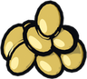
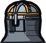
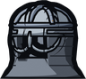
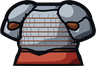
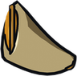

Skaldmark
Levels 28-42. Monsters are level 28 where you come in and grow stronger the further you go; see Levels.
Skaldmark is a land of fjords, snowy fells and long winters, inspired by the Nordic countries. Its towns are built of logs with turf roofs, its churches are tall wooden stave churches, and its people farm barley, rye and cloudberries, fish the fjords and keep reindeer and goats. Snow falls on much of the realm, and the northern lights fill the sky on clear nights.
The capital, Vindholm, is a walled city of nine maps. Ravnsund is the fishing town on the fjord, Fjellby the mountain farm village, and Isvik the icy harbour in the far north. Beyond the towns lie the Hauglund Barrows and the Great Barrow, the troll country of Trollheim with its caves, the Old Watch, and Wyrm's Rest, where the Fjord Wyrm sleeps on its strand.
The Sea Wolves raid the coast from their camp at Ulfsnes; when a Skaldmark town is invaded, it is the Sea Wolves who come. Walk north from the Frostpeak Shrine to get there, or take a ship.
Places
260 maps and 40 rooms. Named places:
- Isvik Smokehouses
- Isvik
- Isvik East Huts
- Ulfsnes
- Vindholm Harbour
- Vindholm
- Vindholm East Gate
- Ravnsund West Quay
- Ravnsund
- Wyrm's Rest
- Vindholm Market
- Vindholm Stave Church
- Vindholm Craftsmen's Row
- Fjellby Village
- Fjellby
- Fjellby High Farms
- Ravnsund Lanes
- Ravnsund Hill
- Vindholm Lanes
- Vindholm South Gate
- Vindholm Gardens
- Fjellby Pastures
- Old Watch
- Hauglund Barrows
- Grenwood Crossroads
- Trollheim
- Skaldmark Gate
Creatures
| Creature | Levels | Placed | Tameable |
|---|---|---|---|
| Snow Owl | 28-41 | 80 | yes |
| Yeti | 31-41 | 69 | yes |
| Frost Troll | 30-40 | 51 | |
| Reindeer | 30-41 | 48 | yes |
| Elk | 29-36 | 37 | yes |
| Snow Serpent | 30-40 | 35 | yes |
| Wolf | 28-40 | 33 | yes |
| Snow Demon | 35-43 | 28 | yes |
| Ghost | 31-33 | 10 | yes |
| Skeleton | 31-33 | 10 | yes |
| Goat | 31-37 | 8 | yes |
| Draugr | 31-33 | 7 | |
| Sea Eagle | 34-40 | 5 | yes |
| Sea Wolf Reaver | 36-37 | 4 | |
| Sea Wolf Berserker | 36-37 | 2 | |
| Sea Wolf Spearman | 36-38 | 2 | |
| Sea Wolf Chieftain | 37 | 1 |
People
- Apothecary Dagny
- Apothecary Eskil
- Armourer Frida
- Armourer Jorunn
- Armourer Sigvald
- Brewer Gerd
- Captain Halla
- Captain Ragna
- Coachman Sten
- Coachman Ulf
- Coachwoman Ylva
- Dairymaid Ase
- Dockhand Svein
- Farmer Gudrun
- Farmwife Inga
- Fisher Bo
- Fishmonger Gunhild
- Gatewarden Brynja
- Goodwife Ragnhild
- Grocer Hallgerd
- Grocer Ingvar
- Grocer Orvar
- Grocer Thora
- Guard Bodil
- Guard Eyvind
- Guard Ketil
- Guard Rolf
- Guard Sune
- Guard Tove
- Harbourmaster Bjarne
- Herder Arne
- Huntress Sigrid
- Ice Fisher Brand
- Jarl Sigrun
- Liv the Fishwife
- Merchant Hakon
- Mother Hild
- Old Asa
- Old Halvard
- Old Sigga
- Runecarver Orm
- Skald Eirik
- Sledder Ivar
- Smith Torvald
- Toolmaker Bjarni
- Toolmaker Gudrid
- Toolmaker Leif
- Townsman Bjorn
- Trader Solveig
- Weaponsmith Ragnfrid
- Weaponsmith Solvi
- Weaver Astrid
- Wool Seller Torunn
Quests
| Quest | From | Summary |
|---|---|---|
| Daily: Troll Watch | Guard Rolf | Frost trolls come down from Trollheim every night. |
| The Restless Kings | Mother Hild | Lay 5 Draugr of Hauglund to rest. |
| Thieves on the Wind | Old Halvard | Drive off 4 Sea Eagles from Isvik. |
| Bread for the Hall | Farmer Gudrun | Bring Farmer Gudrun 6 Barley. |
| Herring for the Smokehouse | Ice Fisher Brand | The Isvik smokehouses need herring for the winter stores. |
| Furs for Winter | Huntress Sigrid | Sigrid is stocking furs before the long dark. |
| Over the Pass | Gatewarden Brynja | Find Jarl Sigrun in her hall at Vindholm. |
| Word for Saltreach | Captain Ragna | Sail to Port Saltreach and speak with Harbourmaster Quill. |
| The Sea Wolves | Harbourmaster Bjarne | Break the Sea Wolves at Ulfsnes: defeat 4 raiders and their chieftain. |
| Trolls on the Fells | Jarl Sigrun | Drive back 3 Frost Trolls from the Troll Fells. |
| The Skald's Lost Verse | Skald Eirik | Skald Eirik lost the last verse of the Saga of Hauglund. The draugr of the barrows may remember it. |
| The Wyrm of the Fjord | Jarl Sigrun | Slay the Fjord Wyrm at Wyrm's Rest. |
Farming
| Seed | Farming level | Harvest |
|---|---|---|
 Barley Seeds | 12 | |
| 22 | ||
| 30 |
Regional recipes
| Makes | Skill | Station | From |
|---|---|---|---|
| Blacksmithing 15 | Anvil | 2 × | |
| Blacksmithing 25 | Anvil | 2 × | |
| Blacksmithing 25 | Anvil | 1 × | |
| Carpentry 15 | 3 × | ||
 Spangenhelm | Blacksmithing 30 | Anvil | 3 × |
| Blacksmithing 40 | Anvil | 2 × | |
 Huscarl Helm | Blacksmithing 45 | Anvil | 4 × |
 Lamellar Armour | Blacksmithing 50 | Anvil | 6 × |
| Blacksmithing 60 | Anvil | 4 × | |
| Tailoring 8 | Loom | 2 × | |
| Tailoring 8 | Loom | 1 × | |
| Tailoring 15 | Loom | 4 × | |
 Cloudberry Mead | Cooking 30 | Stove or Campfire | 2 × |
| Blacksmithing 35 | Anvil | 1 × |
Festivals
- Festival of Lights, 1 December to 14 December: falling stars come twice as often.
Deeds and feats
Deeds of Skaldmark
- Novice: Finish Over the Pass, Reach Vindholm, Reach Ravnsund, Defeat 3 Elk. Reward: 5 ×
 Rye Bread, 2 × Cloudberry Mead.
Rye Bread, 2 × Cloudberry Mead. - Adept: Finish Trolls on the Fells, Defeat 5 Sea Wolf Reavers, Catch a Cod, Harvest Barley. Reward:
 Wolfskin Hood,
Wolfskin Hood,  Fur Boots.
Fur Boots. - Master: Slay the Fjord Wyrm, Defeat the Sea Wolf Chieftain, Finish The Restless Kings, Catch a Halibut. Reward: Huscarl Helm,
 Rune Charm; title "of the North".
Rune Charm; title "of the North".
- Wyrmslayer: Slay the Fjord Wyrm 3 times; title "Wyrmslayer".
- Raider-bane: Defeat 50 Sea Wolf Reavers; title "the Raider-bane".
Travel
| From | Ask | To | By | Fare |
|---|---|---|---|---|
| Port Saltreach | Captain Morwen | Ravnsund | ship | 60 gold |
| Ravnsund | Captain Ragna | Port Saltreach | ship | 60 gold |
| Vindholm | Coachman Ulf | Ravnsund | coach | 20 gold |
| Vindholm | Coachman Ulf | Fjellby | coach | 20 gold |
| Vindholm | Coachman Ulf | Isvik | coach | 30 gold |
| Ravnsund Hill | Coachman Sten | Vindholm | coach | 20 gold |
| Fjellby | Coachwoman Ylva | Vindholm | coach | 20 gold |
| Isvik | Sledder Ivar | Vindholm | coach | 30 gold |